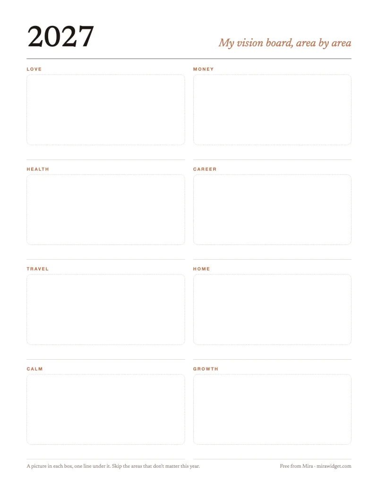
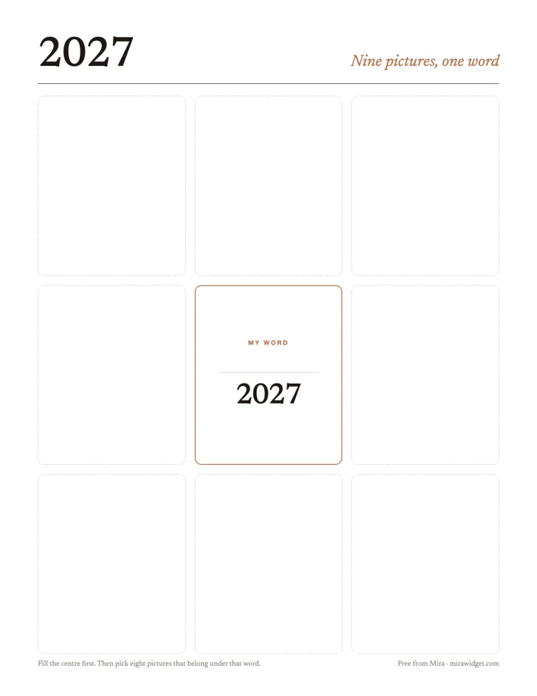
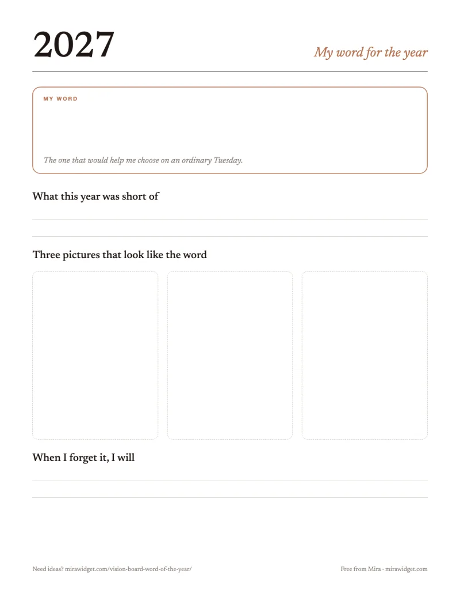
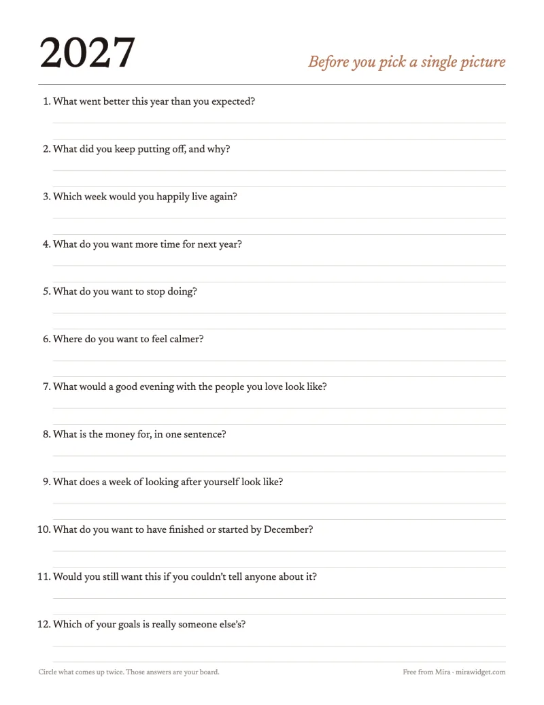
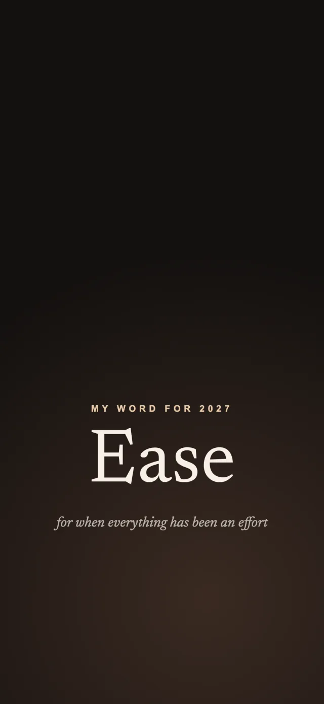

Mira · Guide
Free 2027 vision board templates
Four printable templates for a 2027 vision board and four Lock Screen wallpapers, free to download. No email, no sign-up: tap a link and the file is yours.
The templates are US Letter PDFs printed on white, so they cost little ink, and they print fine on A4 if you choose “Fit to page”. Glue photos into the boxes, or draw in them.
Area by area
Eight boxes for the eight areas most boards come down to: love, money, health, career, travel, home, calm and growth. One picture in each and one line under it. Leave the areas that don’t matter to you this year empty; a blank box is an honest answer.

Nine pictures, one word
A 3×3 grid with your word for the year in the middle. Fill the centre first, then choose eight pictures that belong under that word. It is the quickest of the four to finish, and the easiest to photograph for your phone afterwards.

Word of the year
One page for choosing the word that sums up how you want 2027 to go: what this year was short of, three pictures that look like the word, and what you will do on the days you forget it.

Questions before you start
Twelve questions to answer before you pick a single picture, with room to write. Circle the answers that come up twice: those are your board.

Your word on the Lock Screen
Four wallpapers sized for a current iPhone, each with a word for 2027 and a line on when it fits. The word sits low on the screen so the clock and your widgets keep the top. Open one, save it to Photos, and set it from Settings → Wallpaper.

Ease: for when everything has been an effort →

Bold: for saying the thing, applying, asking →


Then keep it where you look
A printed board is in front of you a lot in January and hardly at all by March. Take a photo of yours and put it on your phone, where you look dozens of times a day. Mira, the app this site belongs to, turns each picture into a widget card with its own line, on the Home Screen and the Lock Screen.
Vision board ideas for students, couples, families and more →
Print one, not all four
Pick the template that matches how you think: by area if you like structure, the 3×3 if you like one big idea. Finish that one this week and add the next only if you miss it.

on your iPhone